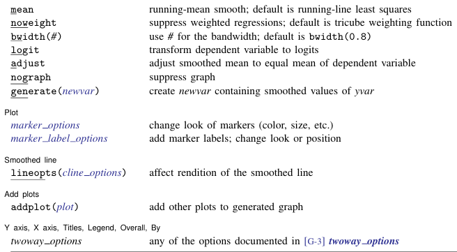
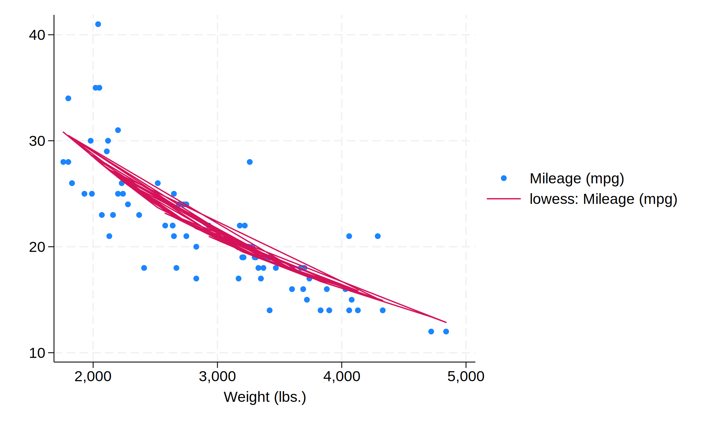

代码
import stata_setup
stata_setup.config('C:/Program Files/Stata18', 'mp', splash=False)Simon Zhou
2025年5月5日
散点图是一种用于可视化两个变量之间关系的图形。它通过在二维坐标系中绘制点来表示数据点的位置，横轴和纵轴分别表示两个变量的值。散点图可以帮助我们识别变量之间的相关性、趋势和异常值。
散点图通常用于探索性数据分析（EDA）阶段。
. // 载入数据集，使用 Stata 的内置数据集 auto.dta
. sysuse auto, clear
(1978 automobile data)
. Stata提供了多种 scheme （style）来美化图形。可以使用set scheme命令来设置主题。以下是一些常用的主题：
s1color：适用于需要强调数据点的情况，具有鲜艳的颜色。s2color：默认主题，适用于需要强调数据点的情况。s1mono：单色主题，适用于打印或黑白显示。s2mono：单色主题，适用于强调数据点的情况。economist：适用于经济学和社会科学领域的主题。journal：适用于学术期刊的主题，具有简洁和专业的外观。s1manual：手动主题，适用于需要自定义颜色和样式的情况。s2manual：手动主题，适用于强调数据点的情况。s2color8：适用于需要强调数据点的情况，具有8种颜色的主题。plotplain：适用于需要强调数据点的情况，具有简单和清晰的外观。更好的主题？
simono：适用于需要强调数据点的情况，具有简洁和专业的外观。
set scheme s1mono : 当前会话中设置主题为s1mono。
set scheme s1mono, perm : 永久设置主题为s1mono, perm 为 permanent 的缩写。
scatter命令用于绘制散点图。基本语法如下：
最基础的形式：
进阶形式：
msymbol:改变形状(help symbolstyle)mcolor:改变颜色(help colorstyle)msize:改变大小(help markerstyle)
[G-4] symbolstyle -- Choices for the shape of markers
(View complete PDF manual entry)
Syntax
------
Synonym
symbolstyle (if any) Description
-------------------------------------------------------
circle O solid
diamond D solid
triangle T solid
square S solid
plus +
X X
arrowf A filled arrow head
arrow a
pipe |
V V
smcircle o solid
smdiamond d solid
smsquare s solid
smtriangle t solid
smplus
smx x
smv v
circle_hollow Oh hollow
diamond_hollow Dh hollow
triangle_hollow Th hollow
square_hollow Sh hollow
smcircle_hollow oh hollow
smdiamond_hollow dh hollow
smtriangle_hollow th hollow
smsquare_hollow sh hollow
point p a small dot
none i a symbol that is invisible
-------------------------------------------------------
For a symbol palette displaying each of the above symbols, type
. palette symbolpalette [, scheme(schemename)]
Other symbolstyles may be available; type
. graph query symbolstyle
to obtain the complete list of symbolstyles installed on your
computer.
Description
-----------
Markers are the ink used to mark where points are on a plot; see [G-3]
marker_options. symbolstyle specifies the shape of the marker.
You specify the symbolstyle inside the msymbol() option allowed with many
of the graph commands:
. graph twoway ..., msymbol(symbolstyle) ...
Sometimes you will see that a symbolstylelist is allowed:
. scatter ..., msymbol(symbolstylelist) ...
A symbolstylelist is a sequence of symbolstyles separated by spaces.
Shorthands are allowed to make specifying the list easier; see [G-4]
stylelists.
Links to PDF documentation
--------------------------
Remarks and examples
The above sections are not included in this help file.
Remarks
-------
Remarks are presented under the following headings:
Typical use
Filled and hollow symbols
Size of symbols
Typical use
-----------
msymbol(symbolstyle) is one of the more commonly specified options. For
instance, you may not be satisfied with the default rendition of
. scatter mpg weight if foreign ||
scatter mpg weight if !foreign
and prefer
. scatter mpg weight if foreign, msymbol(oh) ||
scatter mpg weight if !foreign, msymbol(x)
When you are graphing multiple y variables in the same plot, you can
specify a list of symbolstyles inside the msymbol() option:
. scatter mpg1 mpg2 weight, msymbol(oh x)
The result is the same as typing
. scatter mpg1 weight, msymbol(oh) ||
scatter mpg2 weight, msymbol(x)
Also, in the above, we specified the symbol-style synonyms. Whether you
type
. scatter mpg1 weight, msymbol(oh) ||
scatter mpg2 weight, msymbol(x)
or
. scatter mpg1 weight, msymbol(smcircle_hollow) ||
scatter mpg2 weight, msymbol(smx)
makes no difference.
Filled and hollow symbols
-------------------------
The symbolstyle specifies the shape of the symbol, and in that sense, one
of the styles circle and hcircle -- and diamond and hdiamond, etc. -- is
unnecessary in that each is a different rendition of the same shape. The
option mfcolor(colorstyle) (see [G-3] marker_options) specifies how the
inside of the symbol is to be filled. hcircle(), hdiamond, etc., are
included for convenience and are equivalent to specifying
msymbol(Oh): msymbol(O) mfcolor(none)
msymbol(dh): msymbol(d) mfcolor(none)
etc.
Using mfcolor() to fill the inside of a symbol with different colors
sometimes creates what are effectively new symbols. For instance, if you
take msymbol(O) and fill its interior with a lighter shade of the same
color used to outline the shape, you obtain a pleasing result. For
instance, you might try
msymbol(O) mlcolor(yellow) mfcolor(.5*yellow)
or
msymbol(O) mlcolor(gs5) mfcolor(gs12)
as in
. scatter mpg weight, msymbol(O) mlcolor(gs5) mfcolor(gs14)
(click to run)
Size of symbols
---------------
Just as msymbol(O) and msymbol(Oh) differ only in mfcolor(), msymbol(O)
and msymbol(o) -- symbols circle and smcircle -- differ only in msize().
In particular,
msymbol(O): msymbol(O) msize(medium)
msymbol(o): msymbol(O) msize(small)
and the same is true for all the other large and small symbol pairs.
msize() is interpreted as being relative to the size of the graph region
(see [G-3] region_options), so the same symbol size will in fact be a
little different in
. scatter mpg weight
and
. scatter mpg weight, by(foreign total)
[G-4] colorstyle -- Choices for color
(View complete PDF manual entry)
Syntax
------
Set color of <object> to colorstyle
<object>color(colorstyle)
Set color of all affected objects to colorstyle
color(colorstyle)
Set opacity of <object> to #, where # is a percentage of 100% opacity
<object>color(%#)
Set opacity for all affected objects colors to #
color(%#)
Set both color and opacity of <object>
<object>color(colorstyle%#)
Set both color and opacity of all affected objects
<object>color(colorstyle%#)
colorstyle Description
-------------------------------------------------------------------------
black
stc1 color used by scheme stcolor
stc2 color used by scheme stcolor
.
.
stc15 color used by scheme stcolor
stblue blue used by scheme stcolor
stgreen green used by scheme stcolor
stred red used by scheme stcolor
styellow yellow used by scheme stcolor
gs0 gray scale: 0 = black
gs1 gray scale: very dark gray
gs2
.
.
gs15 gray scale: very light gray
gs16 gray scale: 16 = white
white
blue
bluishgray
brown
cranberry
cyan
dimgray between gs14 and gs15
dkgreen dark green
dknavy dark navy blue
dkorange dark orange
eggshell
emerald
forest_green
gold
gray equivalent to gs8
green
khaki
lavender
lime
ltblue light blue
ltbluishgray light blue-gray, used by scheme s2color
ltkhaki light khaki
magenta
maroon
midblue
midgreen
mint
navy
olive
olive_teal
orange
orange_red
pink
purple
red
sand
sandb bright sand
sienna
stone
teal
yellow
colors used by The Economist magazine:
ebg background color
ebblue bright blue
edkblue dark blue
eltblue light blue
eltgreen light green
emidblue midblue
erose rose
none no color; invisible; draws nothing
background or bg same color as background
foreground or fg same color as foreground
"# # #" RGB value; white = "255 255 255"
"# # # #" CMYK value; yellow = "0 0 255 0"
"hsv # # #" HSV value; white = "hsv 0 0 1"
colorstyle*# color with adjusted intensity; #'s range from 0 to
255
colorstyle%# color with adjusted opacity; #s range from 0 to 100
*# default color with adjusted intensity
%# default color with adjusted opacity
-------------------------------------------------------------------------
When specifying RGB, CMYK, or HSV values, it is best to enclose the
values in quotes; type "128 128 128" not 128 128 128.
Description
-----------
colorstyle sets the color and opacity of graph components such as lines,
backgrounds, and bars. Some options allow a sequence of colorstyles with
colorstylelist; see [G-4] stylelists.
Links to PDF documentation
--------------------------
Remarks and examples
The above sections are not included in this help file.
Remarks
-------
colorstyle sets the color and opacity of graph components such as lines,
backgrounds, and bars. Colors can be specified with a named color, such
as black, olive, and yellow, or with a color value in the RGB, CMYK, or
HSV format. colorstyle can also set a component to match the background
color or foreground color. Additionally, colorstyle can modify color
intensity, making the color lighter or darker. Some options allow a
sequence of colorstyles with colorstylelist; see [G-4] stylelists.
To see a list of named colors, use graph query colorstyle. See [G-2]
graph query. For a color palette showing an individual color or
comparing two colors, use palette color. See [G-2] palette.
Remarks are presented under the following headings:
Adjust opacity
Adjust intensity
Specify RGB values
Specify CMYK values
Specify HSV values
Export custom colors
Adjust opacity
--------------
Opacity is the percentage of a color that covers the background color.
That is, 100% means that the color fully hides the background, and 0%
means that the color has no coverage and is fully transparent. If you
prefer to think about transparency, opacity is the inverse of
transparency. Adjust opacity with the % modifier. For example, type
green%50
"0 255 0%50"
%30
Omitting the color specification in the command adjusts the opacity of
the object while retaining the default color. For instance, specify
mcolor(%30) with graph twoway scatter to use the default fill color at
30% opacity.
Specifying color%0 makes the object completely transparent and is
equivalent to color none.
Adjust intensity
----------------
Color intensity (brightness) can be modified by specifying a color, *,
and a multiplier value. For example, type
green*.8
purple*1.5
"0 255 255*1.2"
"hsv 240 1 1*.5"
A value of 1 leaves the color unchanged, a value greater than 1 makes the
color darker, and a value less than 1 makes the color lighter. Note that
there is no space between color and *, even when color is a numerical
value for RGB or CMYK.
Omitting the color specification in the command adjusts the intensity of
the object's default color. For instance, specify bcolor(*.7) with graph
twoway bar to use the default fill color at reduced brightness, or
specify bcolor(*2) to increase the brightness of the default color.
Specifying color*0 makes the color as light as possible, but it is not
equivalent to color none. color*255 makes the color as dark as possible,
although values much smaller than 255 usually achieve the same result.
For an example using the intensity adjustment, see Typical use in [G-2]
graph twoway kdensity.
RGB values
----------
In addition to specifying named colors such as yellow, you can specify
colors with RGB values. An RGB value is a triplet of numbers ranging
from 0 to 255 that describes the level of red, green, and blue light that
must be emitted to produce a given color. RGB is used to define colors
for on-screen display and in nonprofessional printing. Examples of RGB
values are
red = 255 0 0
green = 0 255 0
blue = 0 0 255
white = 255 255 255
black = 0 0 0
gray = 128 128 128
navy = 26 71 111
CMYK values
-----------
You can specify colors using CMYK values. You will probably only use
CMYK values when they are provided by a journal or publisher. You can
specify CMYK values either as integers from 0 to 255 or as proportions of
ink using real numbers from 0.0 to 1.0. If all four values are 1 or
less, the numbers are taken to be proportions of ink. For example,
red = 0 255 255 0 or, equivalently, 0 1 1 0
green = 255 0 255 0 or, equivalently, 1 0 1 0
blue = 255 255 0 0 or, equivalently, 1 1 0 0
white = 0 0 0 0 or, equivalently, 0 0 0 0
black = 0 0 0 255 or, equivalently, 0 0 0 1
gray = 0 0 0 128 or, equivalently, 0 0 0 .5
navy = 85 40 0 144 or, equivalently, .334 .157 0 .565
HSV values
----------
You can specify colors with HSV (hue, saturation, and value), also called
HSL (hue, saturation, and luminance) and HSB (hue, saturation, and
brightness). HSV is often used in image editing software. An HSV value
is a triplet of numbers. So that Stata can differentiate them from RGB
values, HSV colors must be prefaced with hsv. The first number specifies
the hue from 0 to 360, the second number specifies the saturation from 0
to 1, and the third number specifies the value (luminance or brightness)
from 0 to 1. For example,
red = hsv 0 1 1
green = hsv 120 1 .502
blue = hsv 240 1 1
white = hsv 0 0 1
black = hsv 0 0 0
navy = hsv 209 .766 .435
Export custom colors
--------------------
graph export stores all colors as RGB+opacity values, that is, RGB values
0-255 and opacity values 0-1. If you need color values from Stata in
CMYK format, use the graph export command with the cmyk(on) option, and
save the graph in one of the following formats: PostScript, Encapsulated
PostScript, or PDF.
You can set Stata to permanently use CMYK colors for PostScript export
files by typing translator set Graph2ps cmyk on and for EPS export files
by typing translator set Graph2eps cmyk on.
The CMYK values returned in graph export may differ from the CMYK values
that you entered. This is because Stata normalizes CMYK values by
reducing all CMY values until one value is 0. The difference is added to
the K (black) value. For example, Stata normalizes the CMYK value 10 10
5 0 to 5 5 0 5. Stata subtracts 5 from the CMY values so that Y is 0 and
then adds 5 to K.
Video example
-------------
Transparency in Stata graphs按照某个变量分组绘制散点图，可以使用by选项。by选项可以将数据按照指定变量进行分组，并为每个组绘制单独的散点图。
平滑曲线可以用来描述数据的变化趋势或者揭示数据中的隐藏模式。
在Stata中，绘制光滑曲线的命令主要有以下几种：lowess、loess、lowess2、lpoly和bspline。它们各自具有不同的特点和适用范围，可以根据具体的数据类型和分析目的选择使用。
lowess是一种局部加权回归平滑方法，它可以通过对数据集进行局部加权回归来生成光滑曲线。
其中，yvar 是因变量，xvar 是自变量。options 是一些可选参数，用来进一步调整光滑曲线的形状和拟合效果。例如，可以通过指定 span 参数来控制局部回归的窗口大小，较小的 span 值会导致更平滑的曲线，而较大的 span 值会导致更接近原始数据的曲线。
options 有如下选项：

lowess 命令生成的光滑曲线可以通过绘图命令来展示，例如使用 twoway scatter 命令可以在散点图上叠加绘制光滑曲线。lowess — Lowess smoothing
lowess 命令的示例：
. sysuse auto
(1978 automobile data)
. lowess mpg weight, gen(lowess_mpg)
. twoway scatter mpg weight || line lowess_mpg weight
. 
上述代码首先载入Stata自带的汽车数据集auto，然后使用lowess命令生成一个光滑曲线，将结果保存在变量lowess_mpg中。最后利用twoway scatter命令绘制散点图，并使用line命令在散点图上叠加绘制光滑曲线。